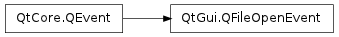

QFileOpenEvent ¶

Detailed Description ¶
The PySide.QtGui.QFileOpenEvent class provides an event that will be sent when there is a request to open a file or a URL.
File open events will be sent to the QApplication.instance() when the operating system requests that a file or URL should be opened. This is a high-level event that can be caused by different user actions depending on the user’s desktop environment; for example, double clicking on an file icon in the Finder on Mac OS X.
This event is only used to notify the application of a request. It may be safely ignored.
Note
This class is currently supported for Mac OS X only.
- class PySide.QtGui. QFileOpenEvent ( file ) ¶
- class PySide.QtGui. QFileOpenEvent ( url )
-
Parameters: - url – PySide.QtCore.QUrl
- file – unicode
Constructs a file open event for the given file .
Constructs a file open event for the given url .
- PySide.QtGui.QFileOpenEvent. file ( ) ¶
-
Return type: unicode Returns the file that is being opened.
- PySide.QtGui.QFileOpenEvent. url ( ) ¶
-
Return type: PySide.QtCore.QUrl Returns the url that is being opened.